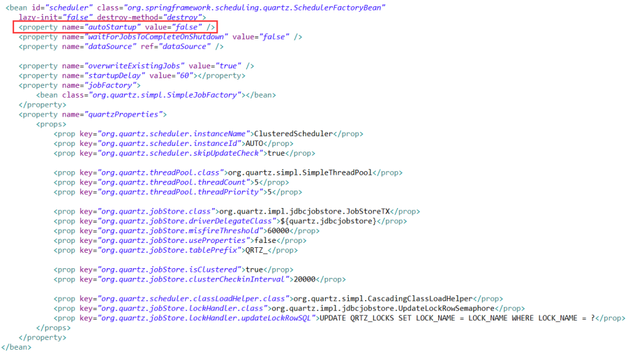
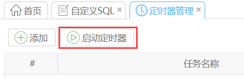
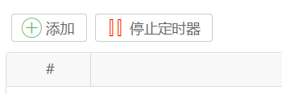
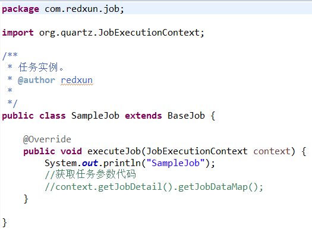
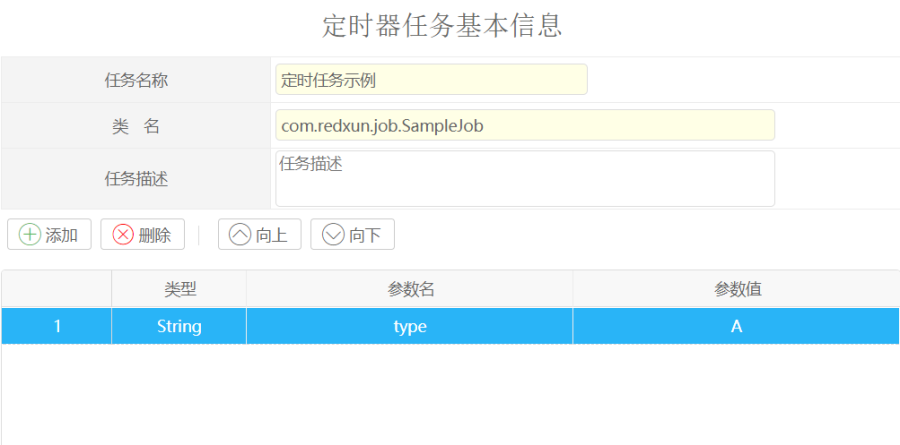
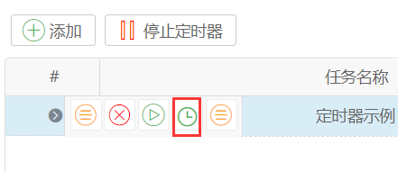
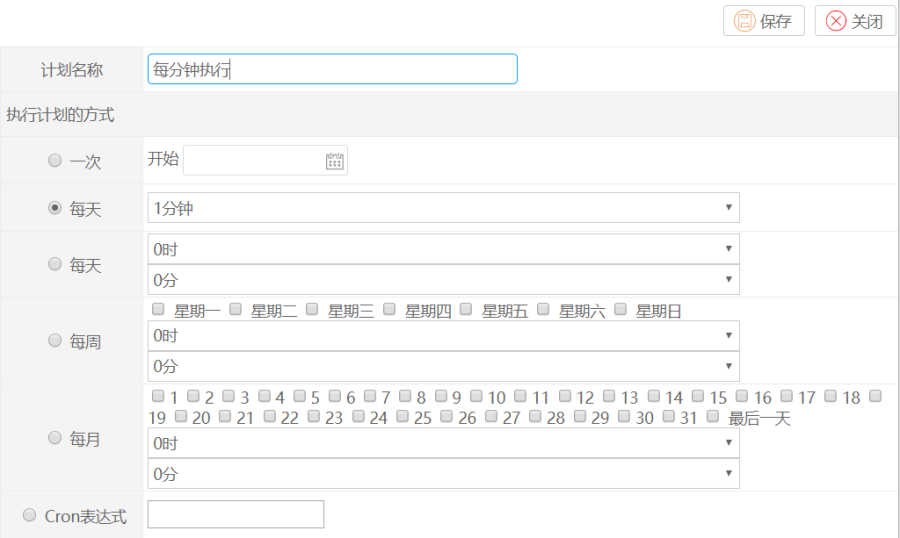
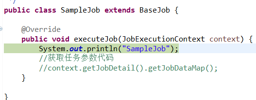
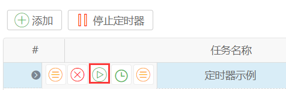
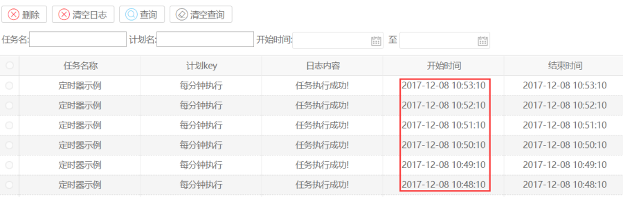

功能说明
平台中使用quartz进行定时管理。quartz 是一个开源的定时任务框架。定时任务在系统中的作用是，需要一些定时的操作，比如每天生成备份数据，每周末处理生成订单报表等等。
在平台中定时器操作主要是：
1.定义定时器任务。
2.对定时任务定义执行计划。
操作步骤
1.启动定时器。
系统配置->系统管理->定时器管理
平台中可以设置定时器是否自动开启，定时服务。
配置文件：spring-base.xml

我们看到当前定时器不是自动启动的，如果需要自动启动，我们需要修改该参数 autoStartup=“true”。
启动定时器：

启动完成后：

可以点击停止定时器。
2.添加定时器任务
定时器任务就是需要定时执行处理的事务，这种任务我们需要编写执行任务代码。在平台中有一个简单的任务实例，可以指导我们如何编写一个定时任务。
这个类的代码如下：

需要继承BaseJob,这里只有一个executeJob的方法，在这个方法中我们编写定时任务执行的任务，我们也可以通过代码context.getJobDetail().getJobDataMap(),获取界面上配置的参数。
在界面上点击添加定时任务。

任务名称：输入名称
类名: 这里需要输入集成了BaseJob的类的全路径。
描述:填写描述信息
参数：需要根据JOB类的实际情况进行输入，在JOB类中需要通过上面说的方法进行获取。
3.添加定时计划
添加完任务后，我们需要安排这个任务什么时候开始执行。

选择定时的任务，点击定时计划图标。

这里我们设置了每分钟执行。

这里我们一分钟执行一次，可以看到这里进入了断点。
这里可以按照我们的具体需求进行设置。
如果满足不了定时需求，我们可以编写cron表达式进行定时，具体参考这个地址。
4.立即执行
有时候定时任务需要直接执行，不通过计划配置。

5.查看定时日志
可以看到任务每分钟执行一次。
